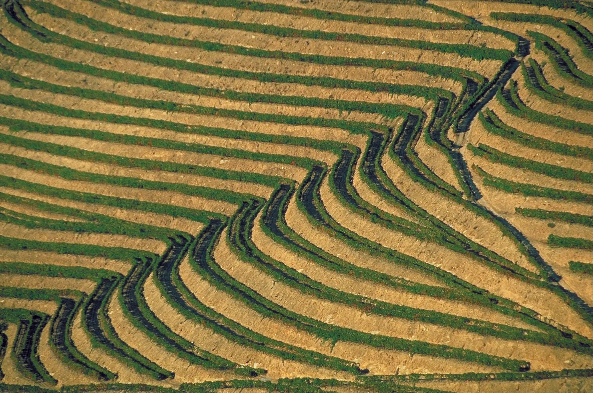
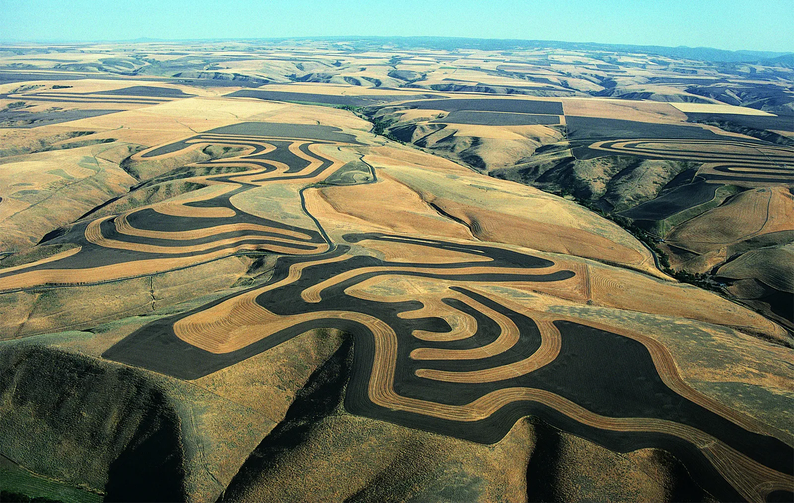
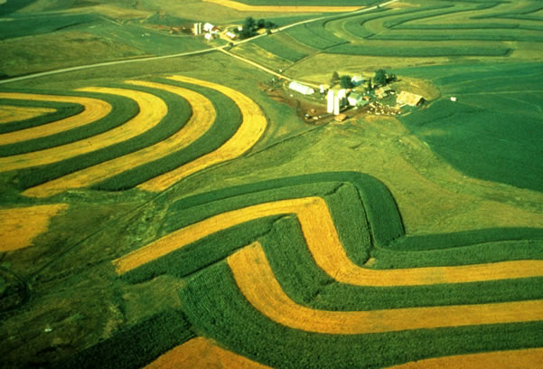
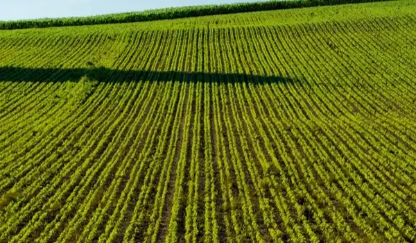
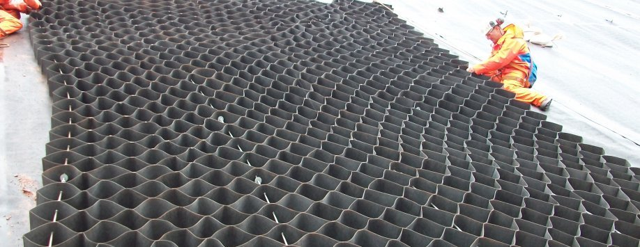
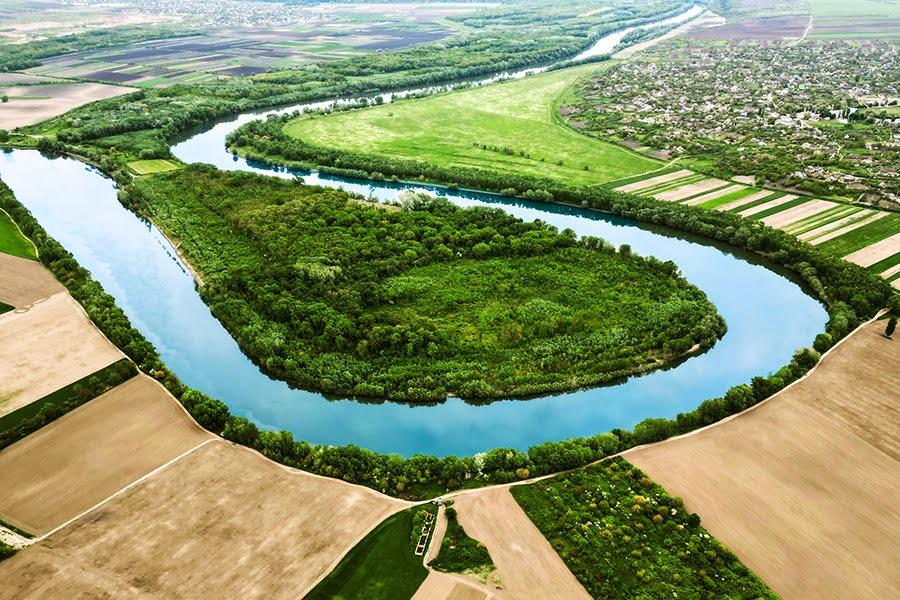
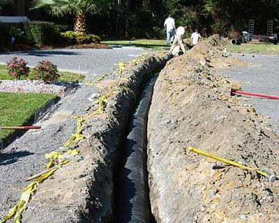
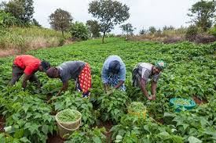

Conservation Practices
Terracing

Creating flat or gently sloping plots to reduce runoff and prevent soil erosion.
Benefits: Reduces soil loss, increases crop yields
Implementation: Engineering design, construction, and maintenance
Contour Farming

Planting across slopes to reduce erosion.
Benefits: Reduces soil loss, improves water retention
Implementation: Surveying, planning, and planting
Strip Cropping

Alternating crops to reduce soil disturbance.
Benefits: Reduces soil erosion, increases biodiversity
Implementation: Crop planning, planting, and management
Soil Reinforcement
Vegetative Cover

Planting trees, shrubs, and grasses to hold soil.
Benefits: Prevents soil erosion, improves biodiversity
Implementation: Seed selection, planting, and maintenance
Geotextiles

Using synthetic materials to stabilize soil.
Benefits: Prevents soil erosion, improves soil stability
Implementation: Material selection, installation, and maintenance
Water Management
Watershed Management

Protecting water sources and managing runoff.
Benefits: Reduces soil erosion, improves water quality
Implementation: Watershed assessment, planning, and management
Drainage Systems

Installing drainage systems to reduce waterlogging.
Benefits: Reduces soil erosion, improves crop yields
Implementation: Engineering design, construction, and maintenance
Agricultural Practices
No-Till or Reduced-Till Farming

Minimizing soil disturbance.
Benefits: Reduces soil erosion, improves soil health
Implementation: Equipment modification, planting, and management
Organic Farming

Using natural methods to maintain soil health.
Benefits: Improves soil fertility, reduces pests and diseases
Implementation: Crop planning, planting, and management
Engineering Solutions
Check Dams
Building small dams to slow runoff.
Benefits: Reduces soil erosion, improves water retention
Implementation: Engineering design, construction, and maintenance
Gabions
Using wire cages filled with rocks to stabilize slopes.
Benefits: Prevents soil erosion, improves soil stability
Implementation: Material selection, installation, and maintenance